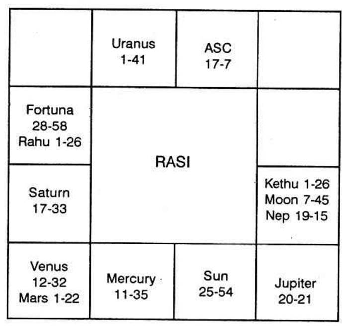

The main difference between business and service is that in business, there is speculation in income; it is unsteady; but in service, for honest people, not receiving bribery, the income is steady and it is once a month or a week or daily: for dishonest people plurality of income is shown and such a planet will have connection with Saturn, Mercury and dual sign.
Sun is 7 shows steady business with a little fluctuation.
Moon in 7 indicates change in the nature of business and income most unsteady. Even the business locality will be changed now and then.
Mars in 7 shows impulsive action. In auction you may pay fancy price and lose ultimately. Indiscreet and rash action bring loss. You will start in a flash, to end in a crash.
Mercury in 7 - speedy turn over, larger profits.
Jupiter in 7 - honest, improves, expands, thrives.
Venus in 7 - good luck, popularity.
Saturn in 7 - very bad for business.
Uranus and Neptune in 7 are not favourable.
For partnership, judge the horoscopes of the partners for harmony, happiness, profit, luck, etc., just like it is done for marriage. Judge the 7th house. The above appears to be as advice. But one should know whether one will do business or not. Also one should understand how the above general rule is to be applied according to Krishnamurti Padhdhati. Planets in 7 in the constellation of lords of 2, 10 and 11 show success whereas whatever be the planet, if it is in the constellation of lord of 8 or 12, it is bad.
Will it continue in service? Or will I take up business?
An active and ambitious person who puts the above query was born at 7 P.M. on 15-11-1933 a Poppy Day. His chart is furnished below:
At the time of birth Ketu dasa Balance 2 yrs. 11 months 5 days.
